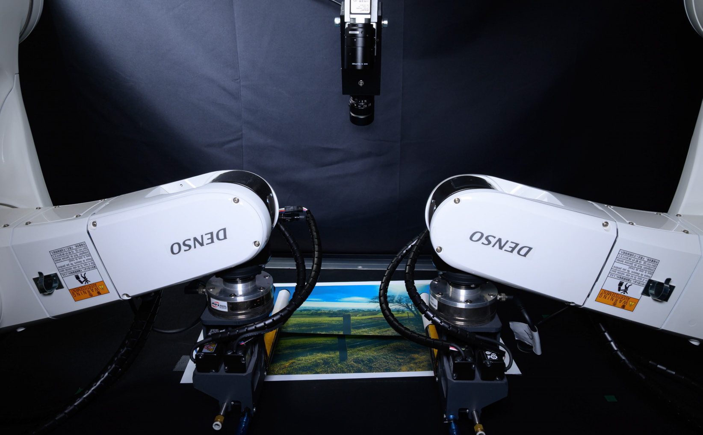

IEEE RA-L / 2026
布の柄を合わせて、重ねる
異なる柄の布にも対応する、Transformerに基づく視覚サーボ。双腕の力制御と組み合わせ、張力を保ちながら位置合わせと重ね合わせを行います。

取り組んだ課題
布を重ねるときは、輪郭だけでなく表面の柄も合わせる必要があります。持ち上げた布の変形を抑えながら、相対的な位置と姿勢を調整することが課題です。
提案した方法
目標画像と現在画像の違いを捉えるDifference Extraction Attention Module（DEAM）を導入し、位置・姿勢の差を推定します。視覚サーボと双腕インピーダンス制御を組み合わせて、位置合わせと平面への配置を行います。
実験と位置づけ
合成画像で学習したモデルを実機に適用し、複数の柄の布で位置合わせを検証しました。対象の柄に対する事前学習を必要としない構成です。
実験動画を見る
First-author publication
Transformer Driven Visual Servoing for Fabric Texture Matching Using Dual-Arm ManipulatorFuyuki Tokuda, Akira Seino, Akinari Kobayashi, Kai Tang, Kazuhiro Kosuge
IEEE RA-L, 2026